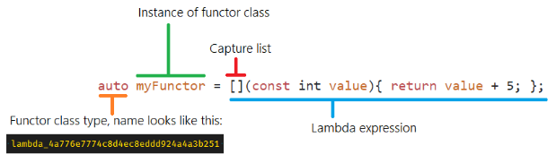
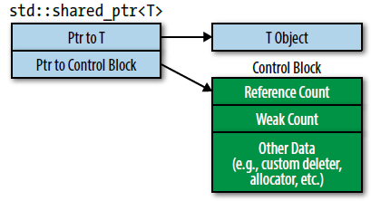
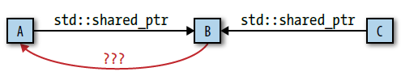

std::movestd::forwardstd::initializer_listnoexceptstd::unique_ptr<>std::shared_ptr<>
std::functiontype deduction happens in:
auto (C++11)decltype (C++11) and decltype(auto) (C++14)we can think of a function template as looking like this:
template<typename T>
void f(ParamType param);
A call can look like this:
f(expr); // call f with some expression
During compilation, compilers use expr to deduce two types: one for T and one for ParamType.
Case 1: ParamType is a reference or pointer type.
const object to a reference parameter, the const-ness is preserved. The constness of the object becomes part of the type deduced for T.Case 2: ParamType is a forwarding (universal) reference.
Refer to: forwarding reference
Case 3: ParamType is not a pointer/reference. Then we are dealing with pass-by-value.
const/volatile, ignore them too.
const (and volatile) is ignored for by-value parameters.In summary:
- argument (expression)'s reference is ignored
- forward reference parameter differentiates lvalue and rvalue
- by-value parameter drops
constandvolatile
Array arguments
template<typename T>
void f(T param); // template with by-value parameter
const char name[] = "J. P. Briggs"; // name's type is const char[13]
f(name); // name is char array, T deduced (decay'ed) as const char*
template<typename T>
void f(T& param); // template with by-reference parameter
// T is deduced as the actual type of the array! ie "const char [13]",
// param is deduced as a reference to this array, ie, "const char (&)[13]".
f(name);
auto deductionauto type deduction, with only one exception, is the same as template type deduction.
Compared to function template, When a variable is declared using auto, auto plays the role of T in the template, and the type specifier (&, const, volatile) for the variable acts as ParamType.
auto x = 27; // case 3 (x is neither ptr nor reference)
const auto cx = x; // case 3 (cx isn't either)
const auto& rx = x; // case 1 (rx is a non-universal ref.)
Same applies to array: array decays into pointers for non-reference type specifiers, and keep as array for reference type specifiers.
const char name[] = "R. N. Briggs"; // name's type is const char[13]
auto arr1 = name; // arr1's type is const char* (decay'ed from array)
auto& arr2 = name; // arr2's type is const char (&)[13]
A special type deduction rule for auto initialization
When the initializer for an auto-declared variable is enclosed in braces, the deduced type is a std::initializer_list<>.
#include <initializer_list> // needed to get third line compiled
auto x1 = 27; // type is int, value is 27
auto x2(27); // ditto
auto x3 = { 27 }; // type is std::initializer_list<int>, value is { 27 }
auto x4{ 27 }; // ditto
Note, passing a braced initializer to a function template parameter that’s not declared to be a std::initializer_list is not allowed by the standard. (thats the difference between auto and function argument deduction).
template<typename T>
void fwd(T&& param) {
f(std::forward<T>(param));
}
fwd({ 1, 2, 3 }); // ERROR! doesn't compile because function template deduction involved.
auto il = { 1, 2, 3 }; // il's type deduced to be std::initializer_list<int>
fwd(il); // fine, perfect-forwards il to f
autoin a function return type or a lambda parameter implies template type deduction, not auto type deduction.
std::movestd::move unconditionally casts its argument to an rvalue (in particular, it produces an xvalue). It is used to indicate that an object may be "moved from". Neither std::move nor std::forward do anything at runtime.
A pseudo implementation. In C++14, std::move is constexpr.
https://github.com/gcc-mirror/gcc/blob/master/libstdc%2B%2B-v3/include/bits/move.h
// C++11
template<typename T>
typename remove_reference<T>::type&& move(T&& param) {
return static_cast<typename remove_reference<T>::type&&>(param);
}
// C++14
template<typename T>
decltype(auto) move(T&& param) {
return static_cast<typename remove_reference_t<T>&&>(param);
}
std::move not only doesn’t actually move anything, it doesn’t even guarantee that the object it’s casting will be eligible to be moved. The only thing you know for sure about the result of applying std::move to an object is that it’s an rvalue.
Don’t declare objects const if you want to be able to move from them. Move requests on const objects are silently transformed into copy operations.
class Annotation {
public:
explicit Annotation(const std::string text)
: value(std::move(text)) // because text is const, even "std::move" casts it to const std::string&&, it still matches string’s copy constructor better, ie., string(const string& rhs);
{ … }
private:
std::string value;
};
std::forwardstd::forward casts its argument to an rvalue only if that argument is bound to an rvalue. Neither std::move nor std::forward do anything at runtime.
std::forward is typically used in a function template taking a forwarding reference parameter
that is to be passed to another function:
template <class T>
void foo(T&& param) {
// param is an lvalue here. If the actual argument to foo was an
// rvalue, pass static_cast<T&&>(param) to g; otherwise, pass param.
g( std::forward<T>(param) );
}
foo(w) // call with lvalue
foo(std::mvoe(w)) // call with rvalue
// variadic version
template<typename... Ts>
void foo1(Ts&&... params) { // accept any arguments
g1(std::forward<Ts>(params)...); // forward them to f
}
The implementation in libc++ uses std::remove_reference (overload each rvalue / lvalue instance of forward), and note that in C++14, std::forward is constexpr.
template <class T>
T&& forward(typename std::remove_reference<T>::type& t) noexcept
{
return static_cast<T&&>(t);
}
template <class T>
T&& forward(typename std::remove_reference<T>::type&& t) noexcept
{
//static_assert(!std::is_lvalue_reference<T>::value,
// "std::forward must not used to convert an rvalue as an lvalue.");
return static_cast<T&&>(t);
}
Note that std::move requires only a function argument, while std::forward requires both a function argument and a template type argument. Then note that the type we pass to std::forward should be a non-reference, because that’s the convention for encoding that the argument being passed is an rvalue.
T&& has two different meanings.
forwarding references arise in two contexts, what they have in common is the presence of type deduction.
The most common is function template parameters, such as
template<typename T>
void f(T&& param); // param is a universal reference
// C++14 lambda expressions may declare auto&& parameters
auto v2 = [](auto&& x) -> auto&& { return std::forward<decltype(x)>(x); };
The second context is auto declarations, like this:
auto&& var2 = var1; // var2 is a universal reference
Because forwarding references are references, they must be initialized. The initializer (an expression) for a forwarding reference determines whether it represents an rvalue reference or an lvalue reference.

[] is turned into constructor parameters and members of the closure object,() are turned into parameters for the closure's operator().The closure type for a lambda-expression with no lambda-capture has a public non-virtual non-explicit const conversion function to pointer to function having the same parameter and return types as the closure type’s function call operator. The value returned by this conversion function shall be the address of a function that, when invoked, has the same effect as invoking the closure type’s function call operator.
Common lambda usage:
*_if (find_if, remove_if, count_if)std::sort, std::nth_element, std::lower_bound)std::unique_ptr, std::shared_ptrDifference between plain function, functors, and lambdas
C++ lambdas and functors are more similar than they are different. A lambda expression creates an nameless functor, it's syntactic sugar. This is to be expected; the main goal of lambdas is to be a syntactically simple means of creating functions and closures.
lambdas and functors differ slightly from plain functions, even when no variables are being captured. To summarize the key differences:
this pointer, whereas plain functions naturally are not. This consumes an extra register and 8 bytes of stack space.Overall, the costs for #1 are minor, and are probably eliminated by an optimization pass in the compiler. The costs for #2 are somewhat higher, but they are cheaper for lambdas! Again, I suspect that an optimization pass would eliminate the difference between the two.
Does lambda allocate?
Never.
Lambdas are a language feature. The compiler will create a closure object representing the function literal you write. The closure object is a value type, created as a prvalue and with automatic storage when assigned to auto (as you must, because its type is unutterable). The only way heap allocation can occur is if you by-value capture a variable whose copy constructor does heap allocation (and this isn’t a consequence of the lambda per se, as I hope you can see)
However, if you assign lambda to std::function, std::function could allocate.
lambda doesn’t need to capture global or static variables
Only objects with automatic storage duration can be captured by a lambda in C++11 (i.e. local variables and function parameters). You don't need to (and can't) capture global or static variables, they can be accessed directly.
"To capture" means to put a copy or a reference to a variable into a lambda object itself. Global and static variables have fixed memory locations. You don't need to store copies or references to them to use them since their location is known at compile-time and doesn't change.
Capture this pointer
https://www.nextptr.com/tutorial/ta1430524603/capture-this-in-lambda-expression-timeline-of-change
[this] — Captures this by reference.[&] — The reference-capture-default can implicitly capture this by reference.[=] — The value-capture-default can implicitly capture this by copy. However, the implicit capture of this through [=] is deprecated in C++20.[*this] — Captures *this by value. By-value capture of this object is introduced in C++17.[=, *this] — Valid since C++17.[=, this] — Valid only since C++20. C++20 deprecates the implicit capture of this via [=] and allows the explicit capture of this in combination with [=].struct Bagel {
int x = 0;
void func() {
//OK until C++20. Warning in C++20.
[=]() { std::cout << x; }();
//Error/warning until C++20. OK in C++20.
[=, this]() { std::cout << x; }();
}
};
Capture class members
this pointer will automatically capture all the member variables for this object inside lambda.auto lambda = [this](){ /* ... use a here... */ };
auto& a = this->a;
auto lambda = [ a](){}; // capture this->a by (a single) copy
auto lambda = [&a](){}; // capture this->a by ref
auto lambda = [ a = this->a](){}; // capture data member by copy
auto lambda = [&a = this->a](){}; // capture data member by ref
init capture
C++14 introduced lambda init capture, also called general lambda capture.
Using an init capture makes it possible for you to specify
auto lambda = [pw = std::move(pw)]();
auto lambda = [pw = std::make_unique<Widget>()]();
auto lambda = [age = 18]()
Mutable lambda
lambda’s operator() is const by-default, meaning it can’t modify the variables it captured by-value (which are analogous to class members). To change this default add mutable:
Define an explicit return type
Using alternative function syntax. Here, the return type is on the right-hand side of the function rather than the left. You can use this in regular functions, member functions on classes, and lambdas too.
auto getAge = []() -> int {
return 6;
};
A good article talking about pros/cons of alternative function return syntax https://blog.petrzemek.net/2017/01/17/pros-and-cons-of-alternative-function-syntax-in-cpp/
Prefer lambdas to std::bind
In C++14, there are no reasonable use cases for std::bind. Always prefer lambda.
Compared to lambdas, code using std::bind is less readable, less expressive, and possibly less efficient.
In C++11, however, std::bind can be justified in two constrained situations:
Capture-less lambda can decay to function pointer
you can assign capture-less lambda to function pointer. Cpp insights
int (*fp)(int, char) = [](int a, char b) {return a + b; } ;
// Compiler converts above line to something like below:
class __lambda_1_24
{
public:
inline /*constexpr */ int operator()(int a, char b) const
{
return a + static_cast<int>(b);
}
using retType_1_24 = int (*)(int, char);
inline /*constexpr */ operator retType_1_24 () const noexcept
{
return __invoke;
}
private:
static inline int __invoke(int a, char b)
{
return a + static_cast<int>(b);
}
} __lambda_1_24{};
using FuncPtr_1 = int (*)(int, char);
FuncPtr_1 fp = static_cast<int (*)(int, char)>(__lambda_1_24.operator __lambda_1_24::retType_1_24());
C++14 introduced generic lambdas - lambdas that use auto in their parameter specifications.
The implementation of this feature is straightforward: operator() in the lambda’s closure class is a template.
auto f = [](auto x) { return func(normalize(x)); };
// given above lambda, the closure class’s function call operator looks like this:
class SomeCompilerGeneratedClassName {
public:
template<typename T>
auto operator()(T x) const // auto return type
{ return func(normalize(x)); }
… // other closure class
};
Use decltype on auto&& parameters to std::forward them.
auto f = [](auto&& param) {
return func(normalize(std::forward<decltype(param)>(param)));
};
// variadic version
auto f = [](auto&&... params) {
return func(normalize(std::forward<decltype(params)>(params)...));
};
std::initializer_listtemplate< class T >
class initializer_list;
An object of std::initializer_list<T> is a lightweight proxy object that provides access to an array of objects of type const T. initializer_list is used to pass a list of values to a function or constructor.
Initializer lists is implemented as a pointer to underlying array and length. The underlying array is a temporary array of type const T[N], in which each element is copy-initialized (ie, copy constructed) from the corresponding element of the original initializer list. This has a couple of implications:
initializer_list will not work for move-only types (like unique_ptr or unique_lock).std::initializer_list works like binding a temporary object to a reference: in some contexts it extends the life-time of the temporary target. But if you try to store it as a class member, you will get into memory management issues.// This generates compiler error
// The reason is, underneath, complier first creates a temp array, then copy constructed the vector, and copy construct is not allowed for unique_ptr
std::vector<std::unique_ptr<int>> data{std::make_unique<int>(40), std::make_unique<int>(2) };
// conceptially, compiler converts above code to this:
const std::unique_ptr<int> __a[] {std::make_unqiue<int>(1), std::make_unique<int>(2)};
std::vector data(std::initializer_list<std::unique_ptr<int>>(__a, __a+2)); // not allowed
// This is undefined behavior, due to temp varaible lifetime issue
auto f(int i, int j, int k) {
return std::initializer_list<int>{i, j, k};
}
// conceptially, compiler converts above code to this:
auto f(int i, int j, int k) {
const int __a[] {i, j, k};
return std::initializer_list<int>{__a, __a+3}; // return pointer to local variable!!!
}
noexceptWith noexcept declaration:
noexcept.Why noexcept was introduced?
The noexcept feature was introduced very late into C++11 to address one particular issue with move semantics. In short, for certain functions, like vector<T>::push_back using move constructors/assignments of T instead of copy constructors/assignments can dramatically increase performance. However, if this move constructor/assignment can potentially throw, push_back would loose the strong exception safety guarantee. Thus, there needs to be a way to determine if a given move operation is potentially throwing or not, and use it or alternatively fall back to good old copying. Another example is, std::vector will copy all elements when reallocating instead of moving them if the move constructor is not noexcept to preserve the strong exception guarantee.
std::unique_ptr<>template<class T, class Deleter = std::default_delete<T>>
class unique_ptr;
By default, that destruction would take place via delete, but, during construction,
std::unique_ptr objects can be configured to use custom deleters
std::unique_ptr.std::unique_ptr's second constructor parameter. // custom deleter using stateless (capture-less) lambda
auto delInvmt = [](Investment* pInvestment) { // takes a raw pointer to object
makeLogEntry(pInvestment);
delete pInvestment;
};
std::unique_ptr<Investment, decltype(delInvmt)> pInv(nullptr, delInvmt);
Size of unique_ptr
delete), std::unique_ptr objects are the same size as raw pointers.
typename Deleter = default_delete<T> is an empty class and unique_ptr employs empty base class optimization.std::shared_ptr<>template< class T > class shared_ptr;
std::shared_ptr object.std::shared_ptr object is two pointers in size.
Performance implications:
std::shared_ptr is twice the size of a raw pointerstd::shared_ptr: when the object is destroyed.Control block is created when:
std::make_shared always creates a control block.std::shared_ptr is constructed from a unique_ptr.std::shared_ptr constructor is called with a raw pointer, it creates a control block.std::enable_shared_from_this
It is bad to construct shared_ptr from same raw pointer multiple times, this problem is particularly easy to happen for this pointer, so we have std::enable_shared_from_this
class Widget: public std::enable_shared_from_this<Widget> {
public:
// factory function that perfect-forwards args to a private ctor
template<typename... Ts>
static std::shared_ptr<Widget> create(Ts&&... params);
void process()
{
// shared_from_this() needs to have an existing control block, otherwise it will throw exception
// normally people create shared_ptr via factory function to a private constructor
processedWidgets.emplace_back(shared_from_this());
}
private:
... // ctors
};
To prevent clients from calling member functions that invoke shared_from_this
before a std::shared_ptr points to the object, classes inheriting from
std::enable_shared_from_this often declare their constructors private and
have clients create objects by calling factory functions that return std::shared_ptrs.
Prefer std::make_shared and std::make_unqiue
Exception safety
// potential resource leak
// 1. Perform “new Widget”.
// 2. Execute computePriority. → if this throws, the widget generated in step1 is leaked
// 3. Run std::shared_ptr constructor.
processWidget(std::shared_ptr<Widget>(new Widget), computePriority());
// instead, this has no potential resource leak
processWidget(std::make_shared<Widget>(), computePriority());
std::make_shared allocates a single chunk of memory to hold both the Widget object and the control block. This optimization:
std::make_shared obviates the need for some of the bookkeeping information in the control block, potentially reducing the total memory footprint for the program.Limitations:
No way to pass in custom deleter.
auto widgetDeleter = [](Widget* pw) { … };
std::unique_ptr<Widget, decltype(widgetDeleter)> upw(new Widget, widgetDeleter);
std::shared_ptr<Widget> spw(new Widget, widgetDeleter);
make_* doesn't work with braced initializers.
Braced initializers can’t be perfect-forwarded. Within the make functions, the perfect forwarding code uses parentheses, not braces.
// Create std::vectors with 10 elements, each of value 20
auto spv = std::make_shared<std::vector<int>>(10, 20);
// Workaround is use auto to create a std::initializer_list object from a braced initializer, then pass it to make_* function
auto initList = { 10, 20 };
// create std::vector using std::initializer_list ctor, std::vector with two elements, 10 and 20.
auto spv = std::make_shared<std::vector<int>>(initList);
In the case where an object has its own operator new and operator delete, it doesn’t fit well with make_shared because the amount of memory that std::make_shared requests isn’t the size of the dynamically allocated object, it’s the size of that object plus the size of a control block.
Memory issue when weak_ptr outlives shared_ptr for long time.
When using std::make_shared, std::shared_ptr’s control block being placed in the same chunk of memory as the managed object. When that object’s reference count goes to zero, the object is destroyed (i.e., its destructor is called). However, the memory it occupies can’t be released until the control block has also been destroyed, because the same chunk of dynamically allocated memory contains both.
As long as std::weak_ptrs refer to a control block (i.e., the weak count is greater than zero), that control block must continue to exist. And as long as a control block exists, the memory containing it must remain allocated. The memory allocated by a std::make_shared, then, can’t be deallocated until the last std::shared_ptr and the last std::weak_ptr referring to it have been destroyed.
shared_ptr aliasing constructor
https://www.justsoftwaresolutions.co.uk/cplusplus/shared-ptr-secret-constructor.html
The aliasing constructor signature looks like this:
template<typename Other,typename Target>
shared_ptr(shared_ptr<Other> const& other, Target* p);
if you're constructing a shared_ptr<T> then the pointer p must be convertible to a T*,
but there's no restriction on the type of Other at all. The newly constructed object shares ownership with other, so other.use_count() is increased by 1, and the value returned by get() on the new object is static_cast<T*>(p).
Usage: It allows you to pass out sub-object of a shared_ptr object and keep the parent shared_ptr alive.
struct X{
Y y;
};
std::shared_ptr<X> px(std::make_shared<X>());
std::shared_ptr<Y> py(px, &px->y); // Now our shared_ptr<Y> keeps our X object alive, so the pointer it holds is still valid.
This could be used for classes that use the pimpl idiom, or trees where you want to be able to pass round pointers to the child nodes, but keep the whole tree alive. Or, you could use it to keep a shared library alive as long as a pointer to a variable stored in that library was being used. If our class X loads the shared library in its constructor and unloads it in the destructor, then we can pass round shared_ptr<Y> objects that share ownership with our shared_ptr<X> object to keep the shared library from being unloaded until all the shared_ptr<Y> objects have been destroyed or reset.
The details
std::weak_ptrstd::weak_ptr<T> operations
std::weak_ptr from shared_ptrexpire(): Check if std::weak_ptr is dangled
std::weak_ptr doesn’t have dereference operatorstd::weak_ptr has expired and, if it hasn’t (i.e., if it’s not dangling), to access the object it points to.
lock(): Check if std::weak_ptr is dangled and create a shared_ptr to use the pointer, return null if std::weak_ptr is expiredstd::shared_ptr<Widget> spw1 = wpw.lock(); // if wpw's expired, spw1 is null
auto spw2 = wpw.lock(); // same as above, but uses auto
shared_ptr constructor takinga a std::weak_ptr, if std::weak_ptr is expired, an exception is thrown.std::shared_ptr<Widget> spw3(wpw); // if wpw's expired, throw std::bad_`std::weak_ptr`
std::weak_ptr use cases
A cache implementation, where the cache keeps std::weak_ptr<T>, and can detect items expired/dangled
std::shared_ptr<const Widget> fastLoadWidget(WidgetID id) {
static std::unordered_map<WidgetID, std::weak_ptr<const Widget>> cache;
// objPtr is std::shared_ptr to cached object (or nullif object's not in cache)
auto objPtr = cache[id].lock();
// if not in cache, load it and cache it (by creating a weak_ptr)
if (!objPtr) {
objPtr = loadWidget(id);
cache[id] = objPtr; // cache it
}
return objPtr;
}
Observer pattern, where the main object has a list of listeners. The main object has no interest in managing the life cycle of listeners, but doesn’t want to access expired/dangled listeners, so it keeps an array of std::weak_ptr<T> of listeners.
Avoid shared_ptr cycles

Back pointer from B -> A, here std::weak_ptr is most appropriate.
shared_ptr, A and B will never to be deleted.std::functionstd::function is just another example of type-erasure.
https://blog.demofox.org/2015/02/25/avoiding-the-performance-hazzards-of-stdfunction/
There are two performance implications of using std::function that might surprise you:
std::function, it does a virtual function call.std::function, it will do a dynamic memory allocation!The reason for the virtual function call is because under the hood, a lambda creates a class that contains the code and all the captured data you specified for capture. Since other callers of your std::function have no idea what the type of that object is (it’s only visible in the scope the lambda was defined in, and is not a human friendly name), the std::function has to use a virtual function to “blindly” call into from the outside, to perform the correct work on the inside. This technique is called “type erasure”.
The reason for the dynamic memory allocation is that std::function is generic and has no idea how much data you captured, but that captured data has to exist inside of a std::function and also has to be able to be copied as a std::function is moved around or copied to other locations. It needs the storage space for your captures.
On clang++ the size of all std::functions (regardless of return value or parameters) is always 32 bytes. It uses what is called small size optimization, much like std::string does on many implementations. This basically means that for small objects std::function can keep them as part of its memory, but for bigger objects it defers to dynamic memory allocation. In clang case, once the capture list size is larger than 16 byte, it will do dynamic allocation.
One way to work around std::function is - don’t use it, use template parameter to pass around lambdas.
template <typename T>
void RunLambda (const T &lambda)
{
// No virtual function calls or dynamic memory allocations!
lambda();
}
std::function implementation
Good article of std::function impl: https://shaharmike.com/cpp/naive-std-function/
First, definition: std::function is a template specialization with a function type
template <typename>
class function; // no definition
template <typename R, typename ... Args>
class function<R(Args...)> {
// ...
};
<R(Args...)> is a template specialization on a function type
The difference between <Result (Arg0, Arg1)> and <Result, Arg0, Arg1> is the former is a single type (that of a function), with nested types in it, while the latter is 3 separate types.
Functions in C++ has a type. So, for a function like int foo(double, char), its type is int(double, char). What your specialization does is allow you to pass a function type to the template and it will deduce the parameters from that, instead of having you specify them yourself.
An simplified implementation (almost same as std::any type erasure implementation):
template <typename T>
class naive_function;
template <typename ReturnValue, typename... Args>
class naive_function<ReturnValue(Args...)> {
public:
template <typename T>
naive_function& operator=(T t) {
callable_ = std::make_unique<CallableT<T>>(t);
return *this;
}
ReturnValue operator()(Args... args) const {
assert(callable_);
return callable_->Invoke(args...);
}
private:
class ICallable {
public:
virtual ~ICallable() = default;
virtual ReturnValue Invoke(Args...) = 0;
};
template <typename T>
class CallableT : public ICallable {
public:
CallableT(const T& t)
: t_(t) {
}
~CallableT() override = default;
ReturnValue Invoke(Args... args) override {
return t_(args...);
}
private:
T t_;
};
std::unique_ptr<ICallable> callable_;
};
The original proposal that describes it is N2439.
Think of each (non-static) member function as a free function with one additional special parameter in front: the implied *this object. Then these references apply to this implied parameter.
In other words, it indicates a member function is invoked on a temporary/const object.
Note that you can combine the cv-qualifiers (const and volatile) and ref-qualifiers (& and &&).
template <typename T>
class optional {
T& value() &;
T&& value() &&;
T const& value() const&;
};
Simple usage
struct test{
void f() &{ std::cout << "lvalue object\n"; }
void f() &&{ std::cout << "rvalue object\n"; }
};
int main(){
test t;
t.f(); // lvalue
test().f(); // rvalue
}
One usage of this is to prevent accidentally wrong code like this
struct X {
X& operator=(X x&) & = default;
};
X x{};
if(X() = x) {...} // This won't compile with l-ref-qualifier